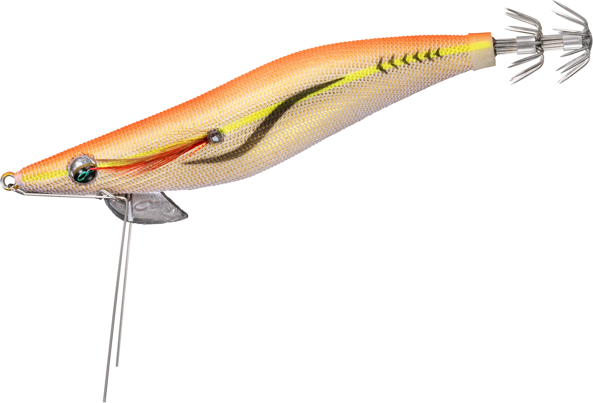
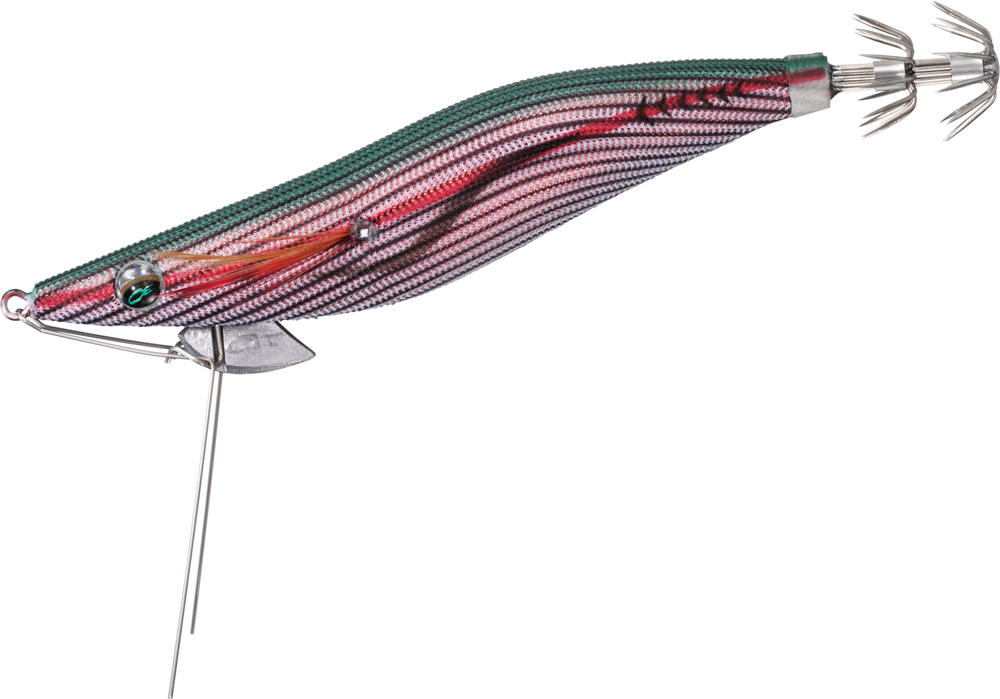
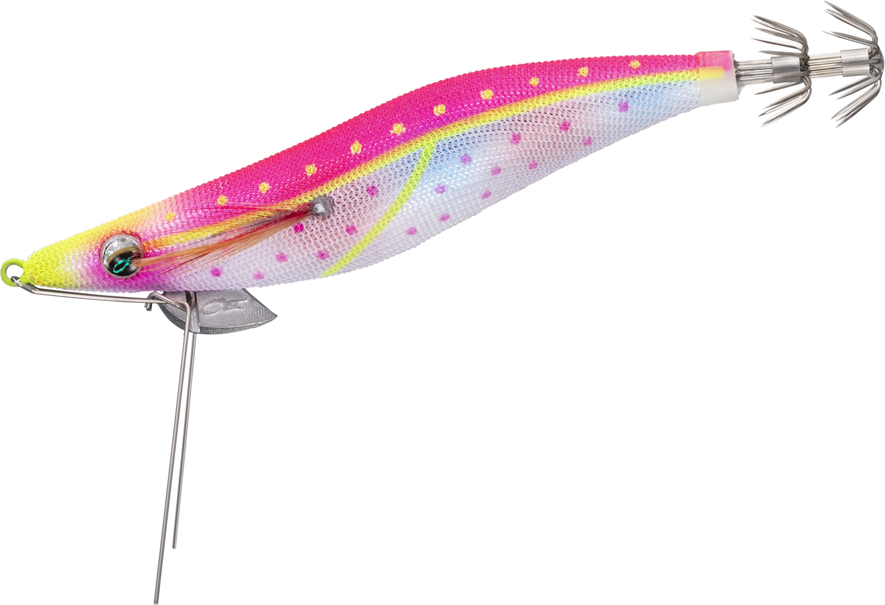
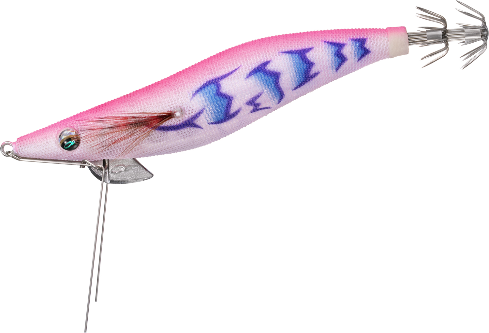
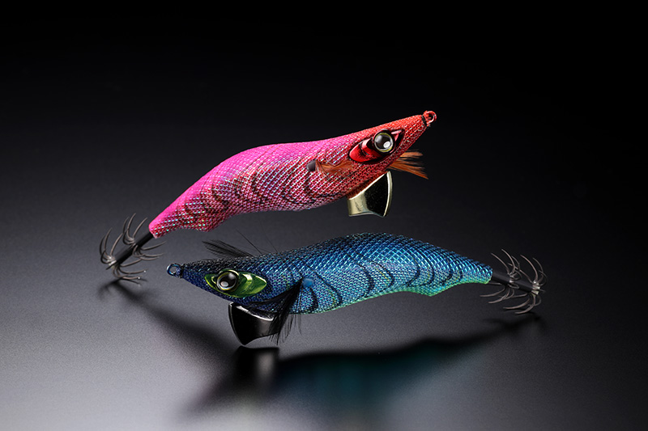

エメラルダス ダートLC ネガード
（EMERALDAS DART LC NEGUARD）
エメラルダス ダートLC ネガード（EMERALDAS DART LC NEGUARD）はDAIWA（ダイワ）のエギです。
バス釣りのカバー打ちから発案された、FISH DEVICE社の着脱可能な「FDガード」を搭載。エギングで最大の天敵ともいえる根掛かりを大幅に減らし、これまで攻めきれなかった藻場や岩礁帯へ思い切って投げ込めるのが最大の魅力です。

画像出典:DAIWA公式HP
スペック
- メーカー
- DAIWA（ダイワ）
- タイプ
- エギ（FDガード搭載）
- サイズ・自重
- 2.5号 11g／3号 16g／3.5号 20g
- フォールスピード
- 2.5号 5.5秒/m／3号 4.0秒/m／3.5号 3.5秒/m
- ターゲット
- アオリイカ
- 価格
- 1,590円（税別）
- 発売
- 2026年8月（2.5・3号）／2026年9月（3.5号）
▼今すぐチェック

エメラルダス ダートLC ネガードの特徴
着脱できるFDガードで、根掛かりを恐れずポイントへ攻め込めるエギ
-
着脱可能なFDガードで根掛かりを大幅軽減
カバー打ち用に作られたFDガードをエギに搭載。藻や岩などのストラクチャーから根掛かりを回避しやすく、ロストを恐れて避けていたポイントにも投げ込める。ガードは着脱できるので、状況に合わせて外して使うことも可能。
-
金属ガードでボトム感度アップ
金属素材のFDガードがボトムの感触を手元に伝えてくれるので、着底を把握しやすい。根掛かりを避けつつ、ボトム付近を丁寧に探れる。
-
飛距離はノーマルタイプと同等
ガードが付くと空気抵抗が増えるイメージがあるが、FDガードがスタビライザーになって空中での姿勢が安定するため、平均飛距離はノーマルタイプと変わらない。
エメラルダス ダートLC ネガードの使い方
基本はキャストして着底させ、シャクリでダートさせてからフォールで抱かせる。FDガードがあるので、根掛かりを怖がらずにボトムまでしっかり沈められる。
藻場や岩礁帯では、着底を感じたらすぐにシャクリ上げて、ボトムすれすれを丁寧に探っていくのが基本。根掛かりが少ない場所では、ガードを外してノーマルのエギとして使うこともできます。
エメラルダス ダートLC ネガードの得意な状況
藻場・岩礁帯・沈み根の多いポイントで、ボトム付近にいるアオリイカを狙う状況が最大の出番。
根掛かりが怖くてエギを入れられなかった場所こそ、イカが残っていることが多い。ほかの人が攻めきれていないポイントを狙いたい時に選びたい1本です。
ワンポイント
サイズで沈下速度が大きく変わるので、水深や潮の速さに合わせて選びましょう。浅場や秋の新子狙いは2.5号（5.5秒/m）、深場や潮が速い日は3.5号（3.5秒/m）が目安です。
ガードを付けていても根掛かりはゼロにはならないので、着底したらすぐに次のアクションに移るのがコツです。
オススメカラー
エメラルダス ダートLC ネガードは全8色展開。オススメのカラーを厳選して紹介します。
 金－オレンジアジ
金－オレンジアジ
金テープにオレンジの定番アピールカラー。朝夕マズメや濁り潮で迷ったらまずこれ。

赤－縞アーミーグリーンアジ赤テープの濃いシルエットで、ローライトや藻場で存在感を出せる。

マーブル－ネオサクラダイマーブルテープのピンク系。日中の澄み潮でも使いやすいオールラウンダー。

ピンク夜光－ハッスルナイト夜光ボディのピンク系。ナイトゲームや深場でのアピールに。
画像出典:DAIWA公式HP
エメラルダス ダートLC ネガードに似ているルアー
-
 エギ政 改
DUO
詳細はこちら＞
エギ政 改
DUO
詳細はこちら＞
NORMALとSHALLOWの2タイプ展開のエギ。シャローの藻場ならSHALLOWタイプ、根掛かりが多い岩礁帯ならネガードと使い分けたい。
-

ゲキダキ カミナリ ジャッカル 詳細はこちら＞飛距離・ダート・フォールの安定性を追求したエギ。根掛かりの少ない場所での広範囲サーチに向く。
-
 エギ王K ディープ
ヤマシタ
詳細はこちら＞
エギ王K ディープ
ヤマシタ
詳細はこちら＞
速く安定して沈むディープモデル。深場のボトムを素早く取りたい時の持ち替え候補。